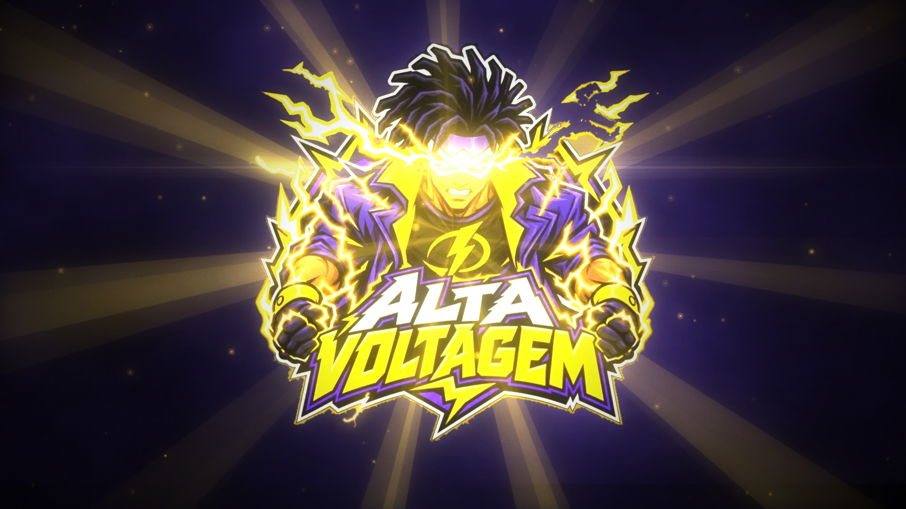
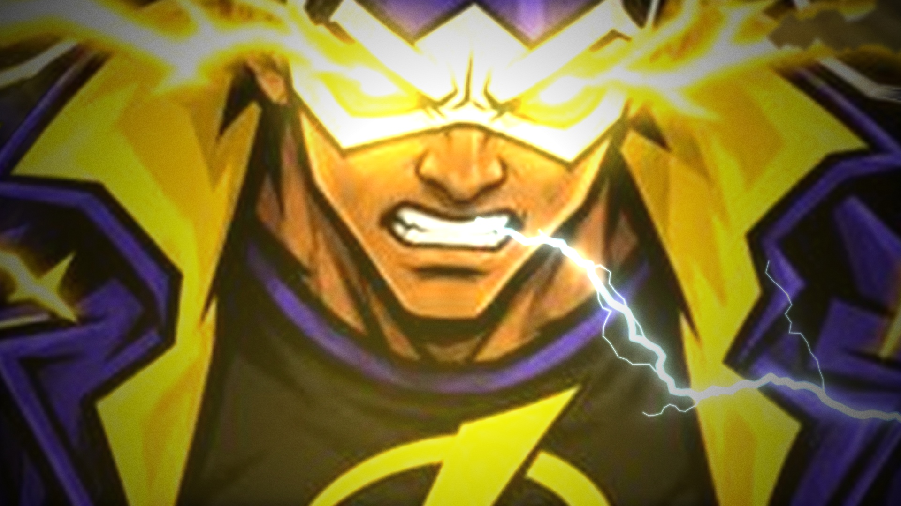
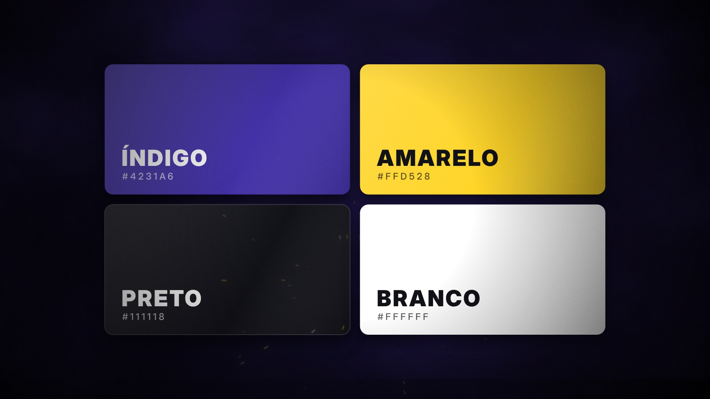
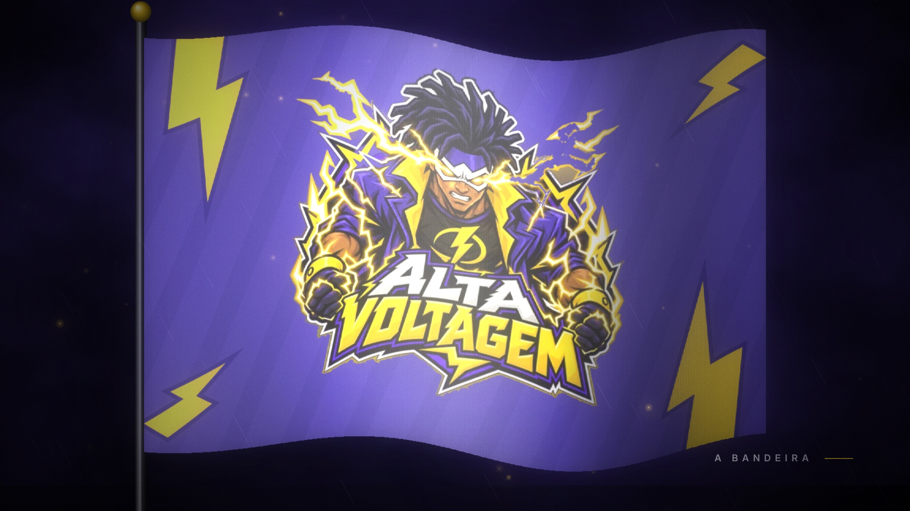
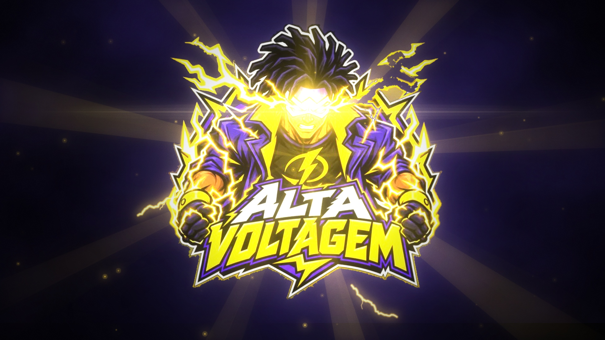
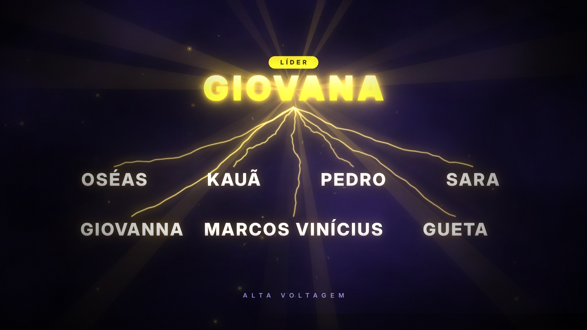
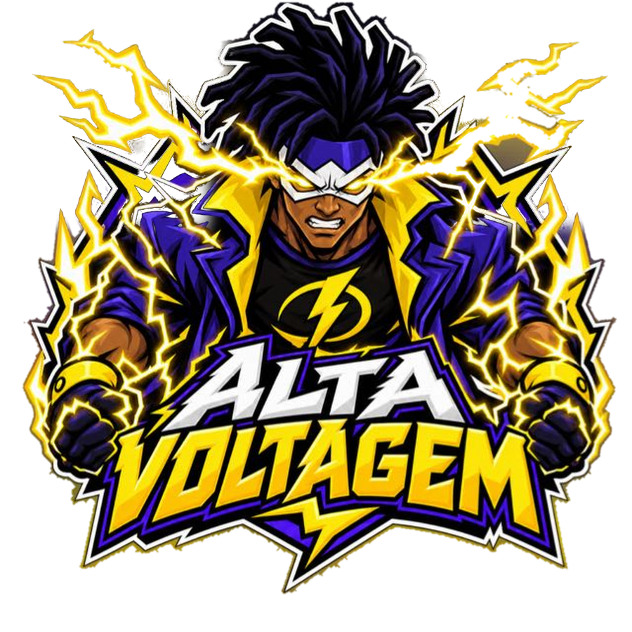

Energia que vem do Alto.
Cada um com o seu herói, o seu sonho, a sua história. Quando a gente se conecta, a energia sobe. E a fonte dessa energia não está em nós: ela vem do Alto.
Cada participante respondeu: qual é o seu herói favorito? Qual é o seu sonho? Para onde seria a sua viagem?
Escolhemos a líder, Giovana. Ela montou a equipe lendo as respostas, uma por uma.
O herói do Oséas foi o Super Choque. A turma entrou na brincadeira e o nome nasceu: Alta Voltagem.
O nome não nasceu de um estudo bíblico, e a gente fala isso com sinceridade. Ele nasceu da alegria de estar junto. Mas, quando abrimos a Bíblia, descobrimos que luz, poder e fervor sempre fizeram parte da história de Deus com o seu povo.

É a força que coloca a energia em movimento. Sem ela, a luz não acende.
Intensidade máxima. A gente não quer uma fé morna: quer uma fé ligada no máximo.
O trocadilho é proposital: a nossa energia é alta porque vem do Alto.
Os versículos aparecem no vídeo na ordem de um circuito elétrico: a luz acende, o poder chega, a luz se espalha e o fervor mantém tudo ligado.
São as primeiras palavras de Deus registradas na criação, e a primeira coisa que Ele cria é a luz. Antes de qualquer cor, forma ou vida, tudo começa com a luz. A nossa energia também começa n'Ele.
A palavra "luz" explode e inunda a tela de branco. É dessa luz que nascem as cores da equipe, porque sem luz não existe cor.
"Tudo começou com uma frase: haja luz. Antes de sermos equipe, antes de termos cor, Deus acendeu a luz. É por isso que o nosso vídeo nasce dela."
No grego original, "poder" é dýnamis, a mesma raiz de "dinâmica" e "dinamite". É o versículo mais "alta voltagem" da Bíblia: um poder que desce, vem do Alto e não da nossa força.
Logo depois dele, um raio cai do céu e revela a bandeira. O poder desce e a nossa identidade aparece. A bandeira é o sinal de quem foi enviado.
"A palavra poder, no grego, é dýnamis, de onde vem dinamite. Esse poder não é nosso: ele desce. Por isso, no vídeo, o raio cai do céu antes da bandeira aparecer."
Jesus não diz "você", diz "vocês". A luz é coletiva. E logo depois, no mesmo trecho, Ele lembra que ninguém acende uma candeia para escondê-la: luz existe para ser vista.
O "vocês" puxa os nomes da equipe, cada um atingido por um raio. No fim, todos aparecem ligados por energia à líder: uma só rede, uma só luz.
"Jesus disse vocês, no plural. Ninguém brilha sozinho. Por isso, depois desse versículo, entram os nossos nomes, um por um, até ficarmos todos conectados."
"Fervorosos" vem de uma palavra grega que significa ferver. É o oposto de uma fé morna. Se existe uma tradução bíblica de "alta voltagem", é esta: um espírito que não esfria.
É o último versículo. Depois dele, a tempestade se concentra, tudo apaga, os olhos acendem no escuro e o raio final traz a logo. O fervor fecha o circuito.
"Fervoroso quer dizer fervendo. É isso que Alta Voltagem significa pra nós: uma fé que não esfria. E é com esse versículo que o nosso vídeo termina."
A cor do céu de tempestade, do momento antes do raio. Profundidade e firmeza.
A cor do raio e da luz. É a energia da equipe e o destaque de tudo.
O escuro onde a luz se destaca. "A luz brilha nas trevas" (João 1:5).
O clarão do relâmpago. Clareza, verdade e a luz no seu ponto máximo.


A bandeira junta tudo: o céu de tempestade (índigo), a energia (os raios nos cantos) e a nossa identidade (o Super Choque com o nome da equipe). No vídeo, ela é revelada por um raio, logo depois de Atos 1:8.
Oito nomes, oito histórias, uma corrente.

O filme termina no rosto do Super Choque. A câmera sai dos olhos dele, a logo explode e vem o "Haja luz".
A luz revela as quatro cores e depois vem o versículo do poder, Atos 1:8.
Um raio revela a bandeira, a câmera mergulha nela e entra o "Vocês são a luz do mundo".

Um raio para cada nome, Romanos 12:11, o apagão e a logo final com o golpe mais forte.
Cada versículo entra rasgando a tela por cima da cena anterior, sem respiro. A ideia é que o público sinta a energia subir até o último raio.
Assinatura principal. Usar no fim de toda fala.
Para falar da equipe (Mateus 5:14).
Para falar do nome (Romanos 12:11).
Para falar dos versículos (Atos 1:8 e Gênesis 1:3).

Energia que vem do Alto.